Guide to DSP Pt. 2
Chapter 10: Fourier Transform Properties
It was shown in the last chapter that convolving time domain signals results in their frequency spectra being multiplied. Other mathematical operations such as addition, scaling, and shifting, also have a matching operation in the opposite domain. These relationships are called properties of the Fourier transform.
Linearity of the Fourier Transform
All four members of the Fourier transform family (Fourier transform, Fourer series, DFT, and DTFT) are linear, they possess the properties of homogeneity and additivity. Homogeneity means that a change in amplitude in one domain produces an identical change in amplitude in the other domain. Additivity means that addition in one domain corresponds to addition in the other domain. Frequency spectra are added in rectangular notation by adding the real parts and separately adding the imaginary parts. If $x_1[n] + x_2[n] = x_3[n]$, then $ReX_1[f] + ReX_2[f] = ReX_3[f]$ and $ImX_1[f] + ImX_2[f] = ImX_3[f]$. Think of this as the cosine waves (the real parts) being added together and the sine waves (the imaginary part) being added together as well. Frequency spectra in polar form cannot be directly added; they must be converted into rectangular notation, added, and then reconverted back to polar form.
In spite of being linear, the Fourier transform is not shift invariant, meaning that a shift in the time domain does not correspond to a shift in the frequency domain.
Characteristics of the Phase
In mathematical form, if $x[n] \Leftrightarrow MagX[f] \text{ and } PhaseX[f]$, then a shift in the time domain results in $x[n+s] \Leftrightarrow MagX[f] + PhaseX[f] + 2 \pi sf$, where $f$ is expressed as a fraction of the sampling rate, running between $0$ and $0.5$. A shift of $s$ samples in the time domain leaves the magnitude unchanged, but adds a linear term to the phase, $2 \pi sf$.
Time domain waveforms that are symmetrical around a vertical axis are called linear phase, because the phase of their frequency spectrum is a straight line. Signals that don't have this symmetry are called nonlinear phase.
When the time domain waveform is shifted to the right, the phase remains a straight line, but experiences a decrease in slope. When shifted to the left, there is an increase in slope.
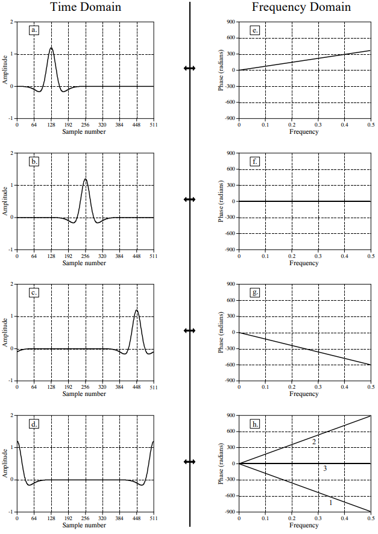
Changing the sign of the phase is a common operation named complex conjugation, represented by a star $*$ at the upper-right of the variable. For example, if $x[f]$ consists of $MagX[f]$ and $PhaseX[f]$, then $x^*[f]$ is called the complex conjugate and is composed of $MagX[f]$ and $- PhaseX[f]$. In rectangular notation, the complex conjugate is found by leaving the real part alone, and changing the sign of the imaginary part.
Here are several examples of how the complex conjugate is used in DSP:
- If $x[n]$ has a Fourier transform of $X[f]$, then $x[-n]$ has a Fourier transform of $X^*[f]$. Flipping the time domain left-for-right corresponds to changing the sign of the phase.
- Recall that correlation can be performed as a convolution, by flipping one of the signals left-for-right. $a[n] * b[n]$ is convolution, while $a[n] * b[-n]$ is correlation. In the frequency domain, these operations correspond to $A[f] \times B[f]$ and $A[f] \times B^*[f]$ respectively.
- The frequency spectrum can be changed to zero phase by multiplying by its complex conjugate. A signal convolved with a left-right flipped version of itself will have left-right symmetry around sample $0$, regardless of what $x[n]$ is.
Periodic Nature of the DFT
Unlike the other three Fourier transforms, the DFT views both the time domain and frequency domain as periodic, which can be confusing since most of the signals used in DSP are not periodic.
As shown in figure 10-8, the DFT views $128$ points to be a single period of an infinitely long periodic signal, meaning the left side of the acquired signal is connected to the right side of a duplicate signal. This can be thought of as the right side of the acquired signal wrapping around connecting to the left side, is referred to as being circular, and is identical to viewing the signal as being periodic.
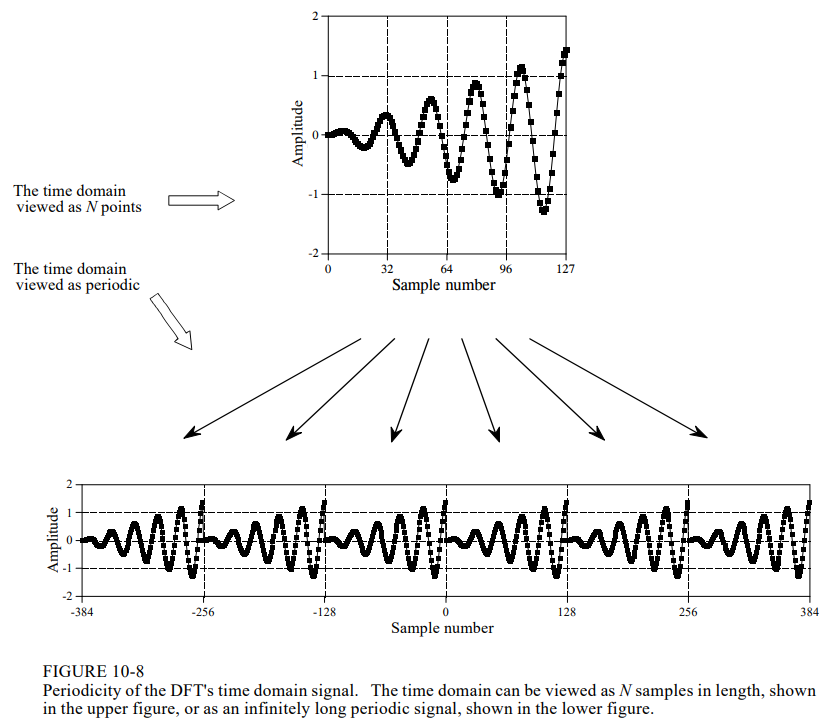
The most serious consequence of time domain periodicity is time domain aliasing. Changes in the frequency domain can create a time domain signal that is too long to fit into a single period, causing the signal to spill over from one period into the adjacent periods. Overflowing portions of the signal alias themselves to a new location in the time domain, and portions of the signal that overflow on the right suddenly seem to reappear on the left side of the signal, and vice versa.
The frequency spectrum between $0$ and $0.5$ appears to have a mirror image of frequencies that run between $0$ and $-0.5$. This mirror image of negative frequencies is slightly different for the magnitude and phase signals. In the magnitude, the signal is flipped left-for-right, and changed in sign. The magnitude is said to be an even signal (it has even symmetry), while the phase is said to be an odd signal (and has odd symmetry). If the frequency spectrum is converted into real and imaginary parts, the real part will always be even, while the imaginary part will always be odd.
The periodicity of the frequency domain makes it susceptible to frequency domain aliasing. If a modified frequency spectrum cannot fit in the space provided, it will push into the adjacent periods. This causes frequencies to not be where they should be, and overlapping frequencies from different periods to add, destroying information. Frequency domain is more difficult to understand than time domain aliasing, since the periodic pattern is more complicated.
Many DSP techniques do not require the use of negative frequencies, or an understanding of the DFT's periodicity. For example, with spectral analysis and frequency response analysis, it is sufficient to view the time domain as extending from sample $0$ to $N-1$, and the frequency domain from zero to one-half of the sampling frequency. These techniques can use a simpler view of the world because they never result in portions of one period moving into another period.
However, certain procedures can only be analyzed by considering how signals overflow between periods. Two examples are circular convolution and analog-to-digital conversion. In circular convolution, multiplication of the frequency spectra results in the time domain signals being convolved, and if the resulting time domain signal is too long to fit inside a single period, it overflows into adjacent periods, resulting in time domain aliasing. In contrast, analog-to-digital conversion is an example of frequency domain aliasing. A nonlinear action is taken in the time domain, changing a continuous signal into a discrete one by sampling. The sepctrum of the original analog signal may be too long to fit inside the discrete signal's spectrum, and when we force the situation, the ends of the spectrum protrude into adjacent periods.
Compression and Extraction, Multirate Methods
A compression of the signal in one domain results in an expansion in the other, and vice versa. For continuous signals, if $X(f)$ is the Fourier transform of $x(t)$, then $\frac{1}{k} \times X(f/k)$ is the Fourier transform of $x(kt)$, where $k$ is the parameter controlling the expansion or contraction. If the time domain signal is compressed so far that it becomes an impulse, the corresponding frequency spectrum is expanded so far that it becomes a constant value (and vice versa).
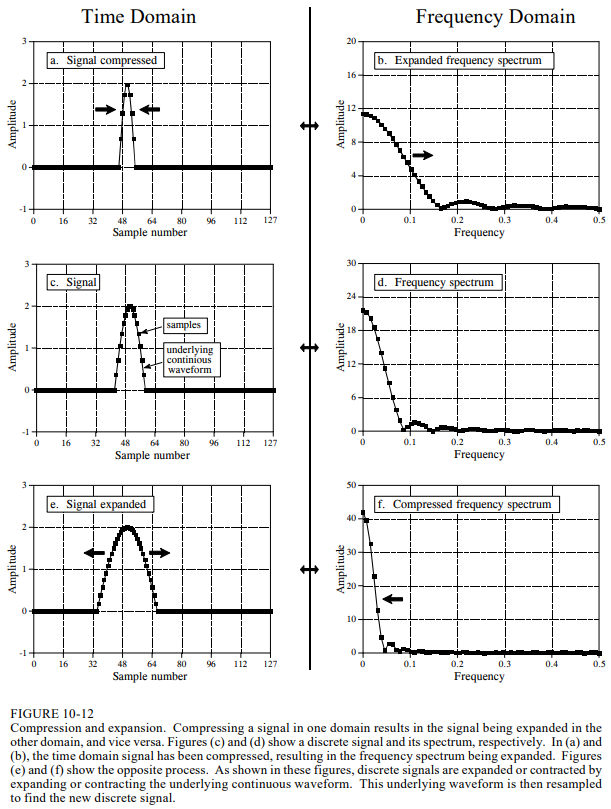
When a discrete signal is compressed, events in the signal (such as width of pulse) happen over a fewer number of samples, and events in an expanded signal happen over a greater number of samples. An equivalent way of looking at this procedure is to keep the underlying continuous waveform the same, but resample it at a different sampling rate. In figure 10-13, (a) shows a discrete Gaussian waveform composed of 50 samples, and (b) shows the same underlying curve represented by 400 samples. The change between (a) and (b) can be viewed in two ways.
- The sampling rate has been kept constant, but the underlying waveform has been expanded to be $8$ times wider
- The underlying waveform has been kept constant, but the sampling rate has increased by a factor of $8$. Methods for changing the sampling rate in this way are called multirate techniques. If more samples are added, its called interpolation, and if fewer samples are used to represent the signal, it is called decimation.
A finer sampling of a frequency spectrum (more samples between $0$ and $0.5$) can be obtained by padding the time domain signal with zeros before taking the DFT. Duality allows this to work in the opposite direction; if we want a finer sampling in the time domain (interpolation), pad the frequency spectrum with zeros before taking the inverse DFT.
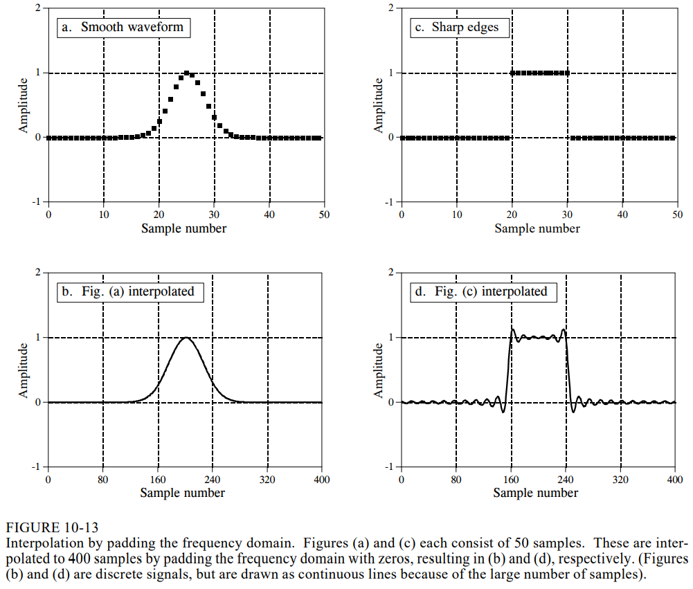
Multiplying Signals (Amplitude Modulation)
An important Fourier transform property is that convolution in one domain corresponds to multiplication in the other domain. Time domain signals can be convolved by multiplying their frequency spectra. Amplitude modulation is an example of the reverse situation, multiplication in the time domain corresponds to convolution in the frequency domain. It also provides an example of how negative frequencies enter science and engineering problems.
Modulation is the process of merging two signals to form a third signal with desirable characteristics of both. With radio communication, in the time domain, amplitude modulation consists of multiplying the audio signal by a carrier wave, resulting in a oscillatory waveform that has an instantaneous amplitude proportional to the original audio signal. We say the envelope of the carrier wave is equal to the modulating signal. This can be detected by a receiving antenna.
Since the time domain signals are multiplied, the corresponding frequency spectra are convolved. Since the spectrum of the carrier is a shifted delta function, the spectrum of the modulated signal is equal to the audio spectrum composed of three components: 1) a carrier wave, 2) an upper sideband, and 3) a lower sideband. These correspond to the three parts of the original audio signal: 1) the DC component, 2) the positive frequencies, and 3) the negative frequencies.
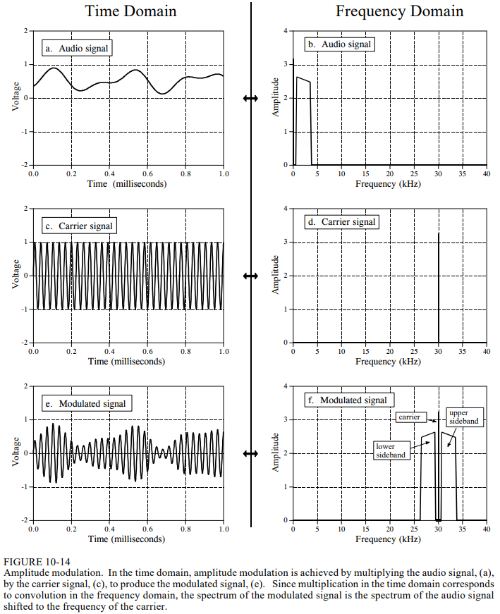
The Discrete Time Fourier Transform (DTFT)
The DTFT operates on aperiodic, discrete signals. The best way to understand it is to relate it to the DFT. The DFT composes a signal into $N/2+1$ sine and cosine waves, with frequencies equally spaced between zero and half of the sampling rate. Padding the time domain signal with zeros makes the period of the time domain longer, and the spacing between samples in the frequency domain narrower. As $N$ approaches infinity, the time domain becomes aperiodic, and the frequency domain becomes a continuous signal. The DTFT relates an aperiodic continuous signal with a periodic continuous frequency spectrum.
The analysis equations for the DFT are as follows:
$$ReX(\omega) = \sum_{n = -\infty}^{\infty} x[n] ~cos(\omega n)$$
$$ImX(\omega) = - \sum_{n = -\infty}^{\infty} x[n] ~sin(\omega n)$$
The DTFT synthesis equation is:
$$x[n] = \frac{1}{\pi} \int_0^{\pi} ReX(\omega) ~cos(\omega n) - ImX(\omega) ~sin(\omega n) ~d \omega$$
Notice that the time domain signal, $x[n]$, is stil discrete, and uses brackets rather than parentheses. The spectrum of the DTFT is continuous, so either $f$ or $\omega$ can be used. The common choice is $\omega$ (sometimes notated with capital omega $\Omega$ instead), because it makes the equations shorter by eliminating the always present factor of $2 \pi$.
When calculating the inverse DFT, samples $0$ and $N/2$ must be divided by $2$, however this is not necessary with the DTFT. However, there is still a normalization factor that must be included, the $2/N$ in the DFT becomes $\frac{1}{\pi}$ in the DTFT.
Chapter 11: Fourier Transform Pairs
For every time domain waveform there is a corresponding frequency domain waveform, and vice versa. For example, a rectangular pulse in the time domain corresponds with a sinc function ($sin(x)/x$) in the frequency domain. The reverse is also true; a rectangular pulse in the frequency domain matches a sinc function in the time domain. Waveforms that correspond in this manner are called Fourier transform pairs.
Delta Function Pairs
For discrete signals, the delta function is a simple waveform, and has an equally simple Fourier transform pair. This can be understood using the expansion/compression property. When the time domain is compressed to an impulse, the frequency domain is expanded until it becomes a constant value.
The Sinc Function
The sinc function is defined as $sin(a) = sin(\pi a) / sin(\pi a)$, however it is commonly expressed in the general form, $sin(x)/x$. In other words, the sinc is a sine wave that decays in amplitude as $\frac{1}{x}$. If the rectangular pulse is symmetrically centered on sample zero, this appears to the DFT as a single pulse because of the time domain periodicity.
The unwrapped magnitude is an oscillation that decreases in amplitude with increasing frequency. The phase is composed of all zeros for a time domain signal that is symmetrical around sample number $0$. The term unsrapped magnitude is used to indicate that it can have both positive and negative values. An N-point time domain signal that contains a unity amplitude rectangular pulse $M$ points wide has a DFT frequency spectrum given by:
(Equation 11-1)
$$MagX[k] = \left| \frac{ sin(\pi k M / N) }{ sin(\pi k / N) } \right|$$
Alternatively, the DTFT can be used to express the frequency spectrum as a fraction of the sampling rate $f$.
(Equation 11-2)
$$MagX(f) = \left| \frac{ sin(\pi f M) }{ sin(\pi f) } \right|$$
The power equation provides $N/2+1$ samples in the frequency spectrum, while this equation provides the continuous curve that the samples lie on. These equations only provide the magnitude, the phase is determined by the left-right positioning of the time domain waveform.
It is often important to understand what the frequency spectrum looks like when aliasing isn't present. This is because discrete signals are often used to represent or model continuous signals, and continuous signals don't alias. To remove the aliasing in equations 11-1 and 11-2, change the denominators from $sin(\pi k / N)$ to $\pi k / N$ and from $sin(\pi f)$ to $\pi f$, respectively.
When the frequency spectrum of the rectangular pulse is not aliased (because the time domain is continuous, or because you are ignoring aliasing), it is of the general form $sin(x)/x$. For continuous signals, the rectangular pulse and sinc function are Fourier transform pairs. For discrete signals this is only an approximation, with the error being due to aliasing.
A key trait of the sinc function is the location of the zero crossings. These occur at frequencies where an integer number of the sinusoid's cycles fit evenly into the rectangular pulse. For example, if the rectangular pulse is 20 points wide, the first zero in the frequency domain is at the frequency that makes one complete cycle in $20$ points, and the second zero at the frequency that makes two complete cycles in $20$ points, etc.
The sinc function is widely used in DSP because it is the Fourier transform pair of a very simple waveform, the rectangular pulse. Multiplying the time domain by a rectangular pulse results in the frequency domain being convolved with a sinc function. This reduces the frequency-spectrum's resolution.
Other Transform Pairs
A triangular pulse in the time domain coincides with a sinc function squared (plus aliasing) in the frequency domain. There is one waveform that is its own Fourier transform, and that is the Gaussian curve (this relationship is only true if you ignore aliasing).
Figure (g) below shows a Gaussian burst, formed by multiplying a sine wave by a Gaussian. The corresponding frequency domain is a Gaussian centered somewhere other than zero.
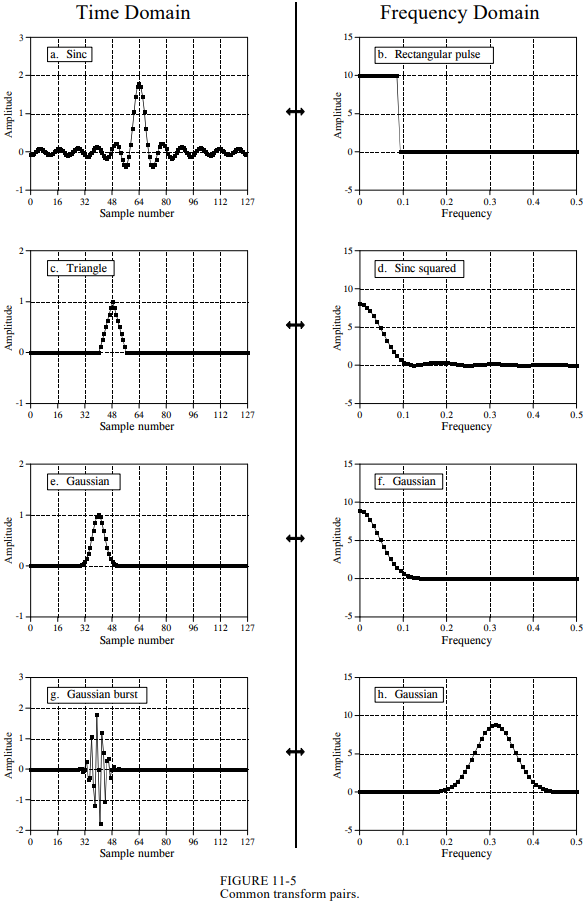
Gibbs Effect
As more frequencies are added to the reconstruction, the signal becomes closer to the final solution. The interesting thing is how the final solution is approached at the edges in the signal. There are three sharp edges in (h) below; two are the edges of the rectangular pulse, and the third is between sample numbers $1023$ and $0$, since the DFT views the time domain as periodic. When only some of the frequencies are used in the reconstruction, each edge shows overshoot and ringing (decaying oscillations). This overshoot and ringing is known as the Gibbs effect.
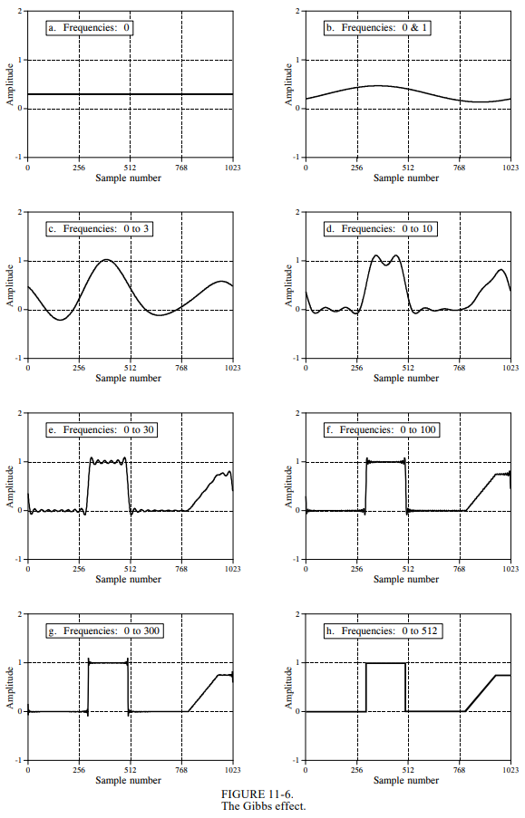
Problems related to the Gibbs effect are frequently encountered in DSP. For example, a low-pass filter is a truncation of the higher frequencies, resulting in overshoot and ringing at the edges in the domain.
Harmonics
If a signal is periodic with frequency $f$, the only frequencies composing the signal are integer multiples of $f$. These frequencies are called harmonics. The first harmonic is named the fundamental frequency. Harmonics can be of any amplitude, but usually become smaller as they increase in frequency. Sharp edges result in larger frequencies. Continuous periodic signals can be represented as a summation of harmonics; discrete periodic signals have a problem (aliasing) that disrupts this relation.
Harmonics can extend to frequencies greater than $0.5$ of the sampling frequncy, and will be aliased to frequencies somewhere between $0$ and $0.5$.
If the distortion of a signal after it has been digitally represented occured in an analog signal, you would remove the offending harmonics with an antialias filter before digitization. Harmonic aliasing is only a problem when nonlinear operations are performed directly on a discrete signal, and even then, the amplitude of these aliased harmonics is often low enough that they can be ignored.
The concept of harmonics explains why the DFT views the time and frequency domains as periodic. A discrete frequency spectrum consists of harmonics rather than a continuous range of frequencies, requiring the time domain to be periodic with a frequency equal to the lowest sinusoid in the frequency domain, i.e., the fundamental frequency.
Chirp Signals
Chirp signals are a way of handling a practical problem in echo location systems such as radar and sonar. The magnitude has a constant value of $1$, while the phase is a parabola.
$$PhaseX[k] = \alpha k + \beta k^2$$
The parameter $\alpha$ introduces a linear slope in phase; i.e., it shifts the impulse response left or right as desired. The parameter $\beta$ controls the curvature of the phase. These two parameters must be chosen such that the phase at frequency $0.5$ is a multiple of $2 \pi$.
The key feature of the chirp system is that it is completely reasonable. If you run the chirp signal through an antichirp system, it is again made into an impulse. This requires the antichirp system to have a magnitude of $1$, and the opposite phase of the chirp system.
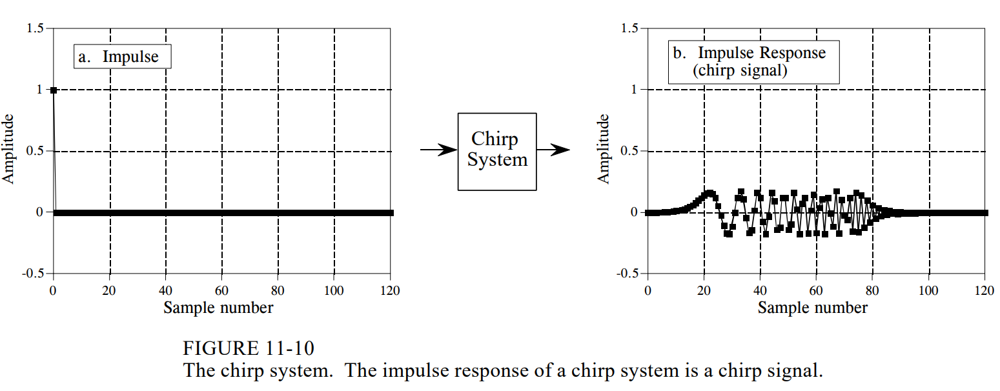
The first requirement for the pulse is that it be as short as possible. A $1$ microsecond pulse provides a radio burst about $300m$ long; better distance resolution requires a shorter pulse. The second requirement is that if you want to detect objects farther away, you need more energy in your pulse. More energy and shorter pulse are conflicting requirements.
Chirp signals provide a way of breaking this limitation. Before the impulse reaches the final stage of the radio transmitter, it is passed through a chirp system. Instead of bouncing an impulse off the target aircraft, a chirp signal is used. After the chirp echo is received, the signal is passed through an antichirp system, restoring the signal to an impulse. This allows portions of the system that measure distance to see short pulses, while the power handling circuits see long duration signals.
Chapter 12: The Fast Fourier Transform (FFT)
The FFT is based on the complex DFT, a more sophisticated version of the real DFT. The real DFT takes an $N$ point domain signal and creates two $N/2+1$ point frequency domain signals. The time domain signal is simply called the time domain signal, and the two signals in the frequency domain are called the real part and imaginary part, holding the amplitudes of the cosine waves and sine waves, respectively. The complex DFT takes two $N$ point time domain signals and creates two $N$ point frequency domain signals. The two time domain signals are called the real part and the imaginary part, just as are the frequency domain signals.
To calculate the real DFT by means of the complex DFT, first move the $N$ point signal into the real part of the complex DFT's time domain, and then set all of the samples in the imaginary part to zero. Calculation of the complex DFT results in a real and an imaginary signal in the frequency domain, each composed of $N$ points; samples $0$ through $N/2$ of these signals correspond to the real DFT's spectrum. The complex DFTs frequency spectrum contains positive frequencies that sit between sample $0$ and $N/2$, corresponding with $0$ to $0.5$ of the sampling rate, while samples $N/2+1$ and $N-1$ contain the negative frequency values, which are usually ignored.
In complex notation, the time and frequency domains each contain one signal made of $N$ complex points. The FFT operates by decomposing an $N$ point time domain signal into $N$ time domain signals each composed of a single point. The second step is to calculate the $N$ frequency spectra corresponding to these $N$ time domain signals. Lastly, the $N$ spectra are synthesized into a single frequency spectrum.
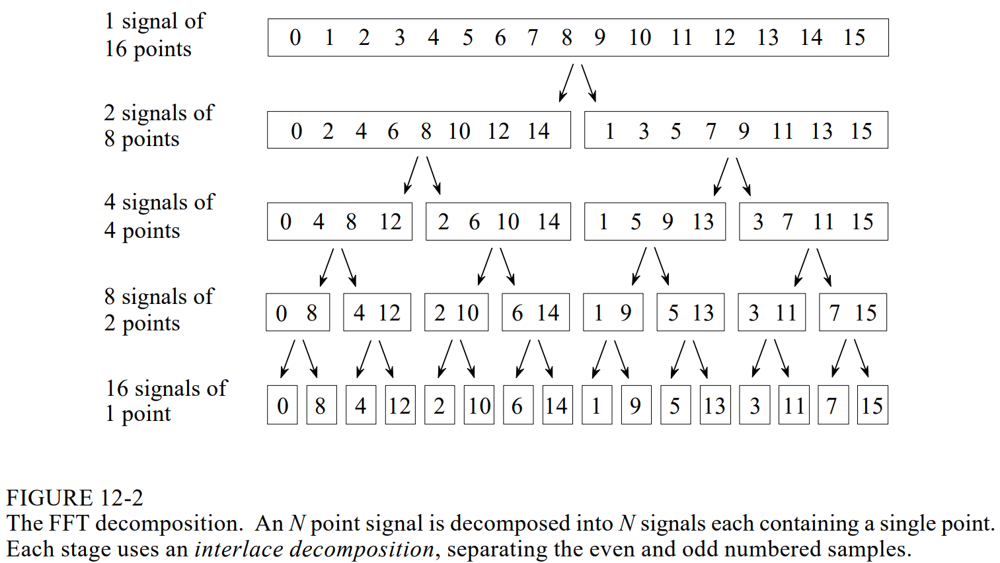
An interlaced decomposition is used each time a signal is broken in two; that is, the signal is separated into even and odd numbered samples. There are $log_2N$ stages required in this decomposition. The last step in the FFT is to combine the $N$ frequency spectra in the exact reverse order as the decomposition took place. $16$ frequency spectra at $1$ point each would be synthesized into $8$, then $4$, and so on, with the last stage resulting in the output of the FFT, a $16$ point frequency spectrum.
Chapter 13: Continuous Signal Processing
Continuous signal processing is a parallel field to DSP, and most of the techniques are nearly identical. Just as the digital computer is the primary tool used in DSP, calculus is the primary tool used in continuous signal processing.
The Delta Function
Continuous signals can be decomposed into scaled and shifted delta functions, just as with discrete signals. Imagine an electronic circuit composed of linear components, such as resistors, capacitors, and inductors. If the question we want to answer is 'how is the shape of the output pulse related to the characteristics of the input pulse', then to simplify the investigation, we will only input pulses that are much shorter than the output.
After taking many measurements, we will come to three conclusions:
- The shape of the input pulse does not affect the shape of the output signal.
- The shape of the output waveform is totally determined by the characteristics of the system, the value and configuration of the resistors, capacitors and inductors.
- The amplitude of the output pulse is directly proportional to the area of the input pulse. This means the output will have the same amplitude for inputs of $1$ volt for $1$ microsecond as with $10$ volts for $0.1$ microseconds, etc.
Input signals that are brief enough to have these three properties are called impulses, and are entirely zero except for a short blip of arbitrary shape.
Mathematicians commonly use ther term impulse to mean a signal that is infinitesimally narrow. The continuous delta function is a normalized version of this type of impulse. The continuous delta function is mathematically defined by three idealized characteristics:
- The signal must be infinitesimally brief
- The pulse must occur at time zero
- The pulse must have an area of $1$
As in the discrete case, the continuous delta function is given the mathematical symbol $\delta()$. The output of a continuous system in response to a delta function is called the impulse response, often denoted by $h()$.
Convolution
Figure 13-2 shows how convolution is viewed from the input side. An input signal $x(t)$ is passed through a system characterized by an impulse response $h(t)$, producing the output signal $y(t)$. This is written $y(t) = x(t) * h(t)$. The input signal is divided into narrow columns each short enough to act as an impulse to the system. The input signal is decomposed into an infinite number of scaled and shifted delta functions. Each of these impulses produces a scaled and shifted version of the impulse response in the output signal, and the final output signal is then equal to the combined effect, the sum of individual responses.
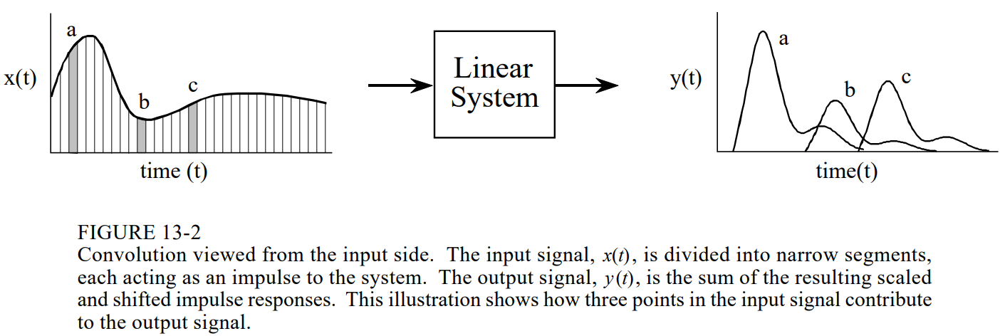
In comparison, the output viewpoint examines how a single point in the output signal is determined by the various values from the input signal. Just as with discrete signals, each instantaneous value in the output signal is affected by a section of the input signal, weighted by the impulse response flipped left-for-right. In the discrete case, the signals are multiplied and summed. In the continuous case, multiplied and integrated.
$$y(t) = \int_{-\infty}^{\infty} x(\tau)h(t - \tau) ~dt$$
This equation is called the convolution integral. The goal is to find an expression for calculating the value of the output signal at an arbitrary time $t$. The first step is to change the independent variable used to move through the input signal and the impulse response. We replace $t$ with a $\tau$, necessary because $t$ is already being used to represent the point in the output signal being calculated. The next step is to flip the impulse response left-for-right, turning it into $h(- \tau)$. Shifting the flipped impulse response to the location $t$ results in the expression becoming $h(t - \tau)$. The input signal is then weighted by the flipped and shifted impulse response by multiplying $x \tau$ and $h(t - \tau)$. The value of the output signal is then found by integrating this weighted input signal from negative to positive infinity.
Figure 13-4 shows a simple continuous linear system: an electronic low-pass filter composed of a single resistor and capacitor. An impulse entering this system produces an output that quickly jumps to some value, then exponentially decays toward 0; i.e., the impulse response is one-sided exponential.
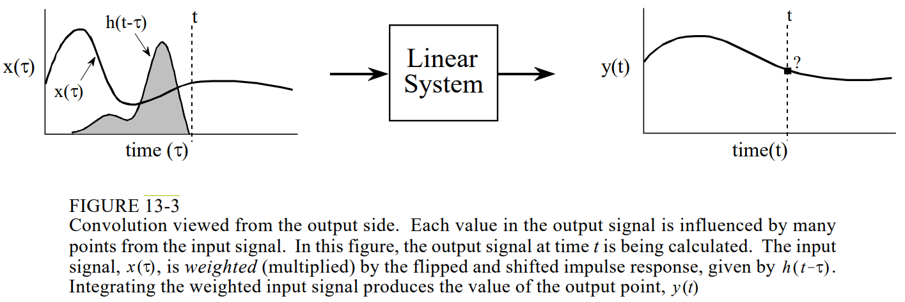
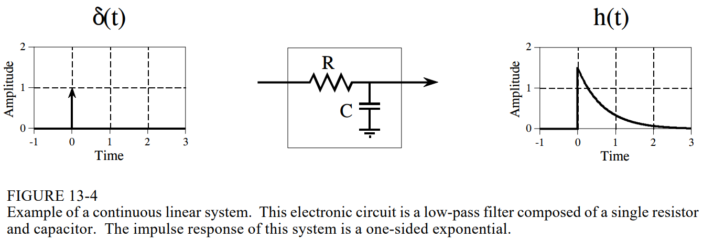
The impulse response of this system is broken into two sections, each represented by an equation:
$$h(t) = 0, \text{ for } t \lt 0$$
$$h(t) = \alpha e^{-\alpha t} \text{ for } t \ge 0$$
- $\alpha$ is $1/RC$ ($R$ is in ohms, $C$ is in farads)
- $t$ is in seconds
Figure 13-5 shows a square pulse entering the system, mathematically expressed by:
$$x(t) = 1, \text{ for } 0 \le t \le 1$$
$$x(t) = 0, \text{ otherwise}$$
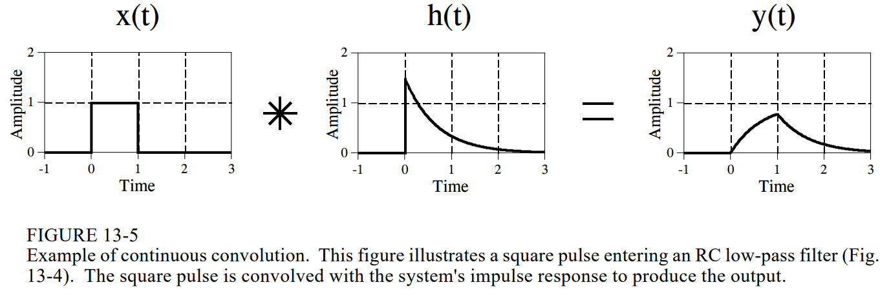
Since both the input signal and the impulse response are completely known as mathematical expressions, the output signal $y(t)$ can be calculated by evaluating the convolution integral. This is complicated by the fact that both signals are defined by regions rather than a single mathematical expression. This is common in continuous signal processing; it is usually essential to draw a picture of how the two signals shift over each other for various values of $t$.
Figure 13-6a shows that the two signals do not overlap at all for $t \lt 0$. This means that the product of the two signals is zero at all locations along the $\tau$ axis, and the resulting output signal is $y(t) = 0$ for $t \lt 0$.
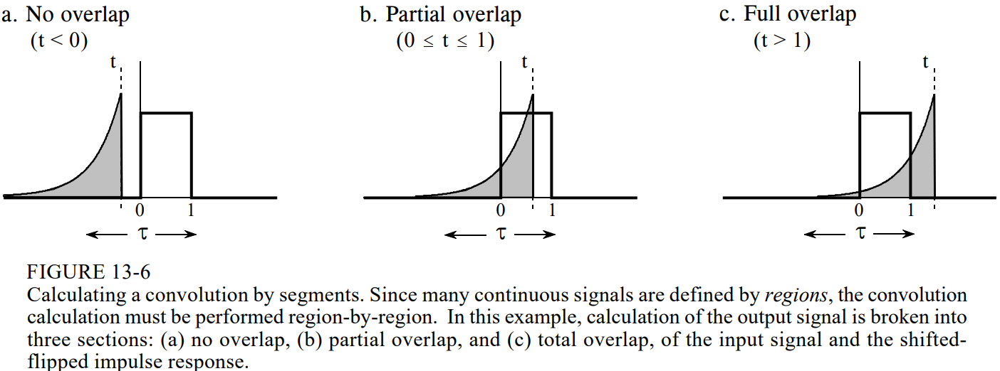
A second case is illustrated in (c), where t is between $0$ and $1$. The signals partially overlap, resulting in their product having nonzero values between $\tau = 0$ and $\tau = t$. Since this is the only nonzero region, it is the only section where the integral needs to be evaluated. This provides the output signal for $0 \lt t \lt 1$ as:
1. Start with equation 13-1
$$y(t) = \int_{-\infty}^{\infty} x(\tau) h(t - \tau) ~d \tau$$
2. Plug in the signals
$$y(t) = \int_0^t 1 \cdot \alpha e^{\alpha(t - \tau)} ~d \tau$$
3. Evaluate the integral
$$y(t) = e^{\alpha t}[e^{\alpha t}] \bigg|_0^t$$
4. Reduce
$$y(t) = e^{-\alpha t} [e^{\alpha t} - 1]$$
$$y(t) = 1 - e^{-\alpha t}, \text{ for } 0 \lt t \lt 1$$
Figure (c) shows the calculation for the third section of the output signal, where $t \gt 1$. Here the overlap occurs between $\tau = 0$ and $\tau = 1$, making the calculation the same as for the second segment, except a change to the limits of integration.
$$y(t) = \int_0^1 1 \cdot \alpha e^{\alpha(t - \tau)} ~d \tau$$
Evaluate the integral:
$$y(t) = e^{-\alpha t} [e^{\alpha \tau}] \bigg|_0^1$$
$$y(t) = [e^{\alpha} - 1] e^{-\alpha t}, \text{ for } t \gt 1$$
Figure 13-7 shows another strategy: modify one of the signals in some linear way, perform the convolution, and then undo the original modification. In this example the modification is the derivative, and it is undone by taking the integral. Taking the derivative simplifies this problem because convolution is easy when one of the signals is composed of impulses. A slight nuisance is that the DC value of the input signal is lost when the derivative is taken. This can result in an error in the DC value of the calculated output signal. The mathematics reflects this as the constant of integration, and there is no systematic way of identifying this error, but it can usually be corrected by inspection of the system.
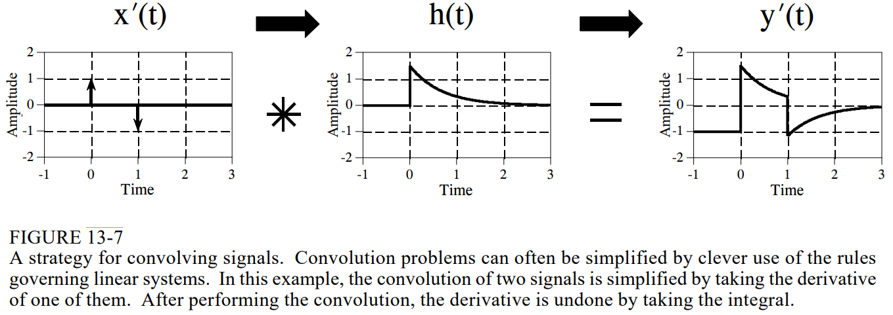
Before starting a difficult convolution problem, you should ask whether a mathematical expression is really needed for the output signal, or if a graph of the waveform is sufficient. If a graph is adequate, you may be better off to handle the problem with discrete techniques, approximating the continuous signals by samples that can be directly convolved by a computer.
The Fourier Transform
The Fourier transform for continuous signals is divided into two categories, one for signals that are periodic, and one for signals that are aperiodic. Periodic signals use the Fourier series, and aperiodic signals use what is simply called the Fourier transform. As in the discrete case, the synthesis equation describes how to construct the time domain signal using data in the frequency domain.
$$x(t) = \frac{1}{\pi} \int_0^{\infty} ReX(\omega) ~cos(\omega t) - ImX(\omega) ~sin(\omega t) ~d \omega$$
In words, the time domain signal is formed by adding (with the integral) an infinite number of scaled sine and cosine waves. The real part of the frequency domain consists of the scaling factors for the cosine waves, while the imaginary part consists of the scaling factors for the sine waves. Recall that $\omega$ is the natural frequency, and has units of radians per second. In other words, $\omega = 2 \pi f$, where $f$ is the frequency in cycles per second (Hertz).
The analysis equations for continuous signals follow the same strategy as the discrete case: correlation with sine and cosine waves.
$$ReX(\omega) = \int_{-\infty}^{\infty} x(t) ~cos(\omega t) ~dt$$
$$ImX(\omega) = - \int_{-\infty}^{\infty} x(t) ~sin(\omega t) ~dt$$
The Fourier Series
The time domain signal used in the Fourier series is periodic and continuous. The periodic signals have a frequency spectrum consisting of harmonics. The first harmonic, the frequency that the time domain repeats with, is called the fundamental frequency. This means the frequency spectrum can be viewed in two ways:
- The frequency spectrum is continuous, but zero at all frequencies except the harmonics
- The frequency spectrum is discrete, and only defined at the harmonic frequencies
In other words, the frequencies between the harmonic can be thought of as having a value of zero, or simply not existing.
The Fourier series synthesis equation creates a continuous periodic signal with fundamental frequency $f$, by adding scaled cosine and sine waves with frequencies $f$, $2f$, $3f$, etc. The amplitudes of the cosine waves are held in the variables $a_1$, $a_2$, $a_3$, etc., and the amplitudes of the sine waves in variables $b_1$, $b_2$, $b_3$, etc. In other words, $a$ and $b$ coefficients are the real and imaginary parts of the frequency spectrum, respectively. In addition, the coefficient $a_0$ holds the DC value of the time domain waveform, the amplitude of a cosine wave with zero frequency. There is no $b_0$ coefficient since a sine wave of zero frequency has a constant value of $0$. The synthesis equation is:
$$x(t) = a_0 + \sum_{n=1}^{\infty} a_n ~cos(2 \pi ftn) - \sum_{n=1}^{\infty} b_n ~sin(2 \pi ftn)$$
The corresponding analysis equations for the Fourier series are usually written in terms of the period of the waveform, denoted by $T$, rather than the fundamental frequency $f$ (where $f = 1/T$).
$$a_0 = \frac{1}{T} \int_{-T/2}^{T/2} x(t) ~dt$$
$$a_n = \frac{2}{T} \int_{-T/2}^{T/2} x(t) ~cos \left( \frac{2 \pi tn}{T} \right) ~dt$$
$$b_n = \frac{-2}{T} \int_{-T/2}^{T/2} x(t) ~sin \left( \frac{2 \pi tn}{T} \right) ~dt$$
If the waveform is even, i.e., symmetrical around $0$, it will be composed solely of even sinusoids, i.e., cosine waves. This makes all of the $b$ coefficients equal to $0$. If the waveform is odd, i.e., symmetrical but opposite in sign around $0$, it will be composed of odd sinusoids (sine waves), resulting in the a coefficients being equal to $0$.
Chapter 14: Introduction to Digital Filters
Digital filters are used for 1) separation of signals that have been combined, and 2) restoration of signals that have been distorted in some way.
Signal separation is needed when a signal has been contaminated with interference, noise, or other signals. Signal restoration may be used, for example, to better represent an audio recording as it had actually occured, or to deblur an image.
Every linear filter has an impulse response, a step response, and a frequency response. Each contain complete information about the filter, but in a different form. If one of the three is specified, the other two are fixed and can be directly calculated. All three are important, because they describe how the filter will react under different circumstances.
The most straightforward way to implement a digital filter is by convolving the input signal with the digital filter's impulse response. When the impulse response is used in this way, filter designers call it the filter kernel.
Another way to make digital filters is called recursion. When a filter is implemented by convolution, each sample in the output is calculated by weighting the samples in the input and adding them together. Recursive filteres are an extension of this, using previously calculated values from the output, plus points from the input. Instead of using a filter kernel, recursive filters are defined by a set of recursion coefficients. The impulse responses of recursive filters exponentially decay in amplitude, in principle making them infinitely long, though the amplitude eventually drops below the round-off noise of the system.
Decibels are a way of expressing the ratio between signals, ideal for describing the gain of a system; i.e., the ratio between the output and input.
$$dB = 10 log_{10} \frac{P_2}{P_1}$$
$$dB = 20 log_{10} \frac{A_2}{A_1}$$
- $P_1$ and $P_2$ express a ratio of power
- $A_1$ and $A_2$ express a ratio of amplitude
Figure 14-3 shows the four basic frequency responses. Their purpose is to allow some frequencies to pass unaltered, while completely blocking others. The passband refers to those that are passed, and the stopband to those that are blocked. The transition band is between. A fast roll-off means that the transition band is very narrow. The division between the passband and transition band is called the cutoff frequency. To separate closely spaced frequencies, the filter must have a fast roll-off, as illustrated in (a) and (b) of figure 14-4.
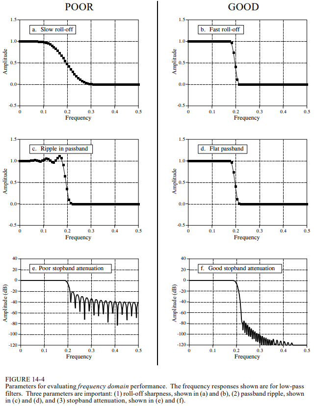
High-Pass, Band-Pass, and Band-Reject Filters
High-pass, band-pass, and band-reject filters are designed by starting with a low-pass filter, and then converting it into the desired response. There are two methods for the low-pass to high-pass conversion: spectral inversion and spectral reversal.
Digital filters can be implemented in two ways, by convolution (also called finite impulse response or FIR), and by recursion (also called infinite impulse response or IIR).
Chapter 15: Moving Average Filters
The moving average is the most common filter in DSP, mainly because it is the easiest to understand and use. It is optimal for reducing random noise while retaining a sharp step increase. However, it is the worst filter for frequency domain encoded signals, with little ability to separate one band of frequencies from another. Relatives of the moving average filter that have slightly better performance in the frequency domain include the Gaussian, Blackman, and multiple-pass moving average.
$$y[i] = \frac{1}{M} \sum_{j=0}^{M-1} x[i + j]$$
- $x[]$ is the input signal
- $y[]$ is the output signal
- $M$ is the number of points in the average
One can change the range of summation, for example, from $j=0$ to $M-1$ into from $j = -(M-1)$ to $(M-1) - 2$. The moving average produces the lowest noise for a given edge sharpness. The amount of noise reduction is equal to the square root of the number of points in the average. A $100$-point moving average filter reduces the noise by a factor of $10$.
Frequency Response
The frequency response of the moving average filter is mathematically described by the Fourier transform of the rectangular pulse.
$$H[f] = \frac{sin(\pi f M)}{M ~sin(\pi f)}$$
The moving average is an exceptionally good smoothing filter (in the time domain) but an exceptionally bad low-pass fiter (in the frequency domain).
Multiple-pass moving average filters involve passing the input signal through a moving average filter two or more times. Two passes are equivalent to using a traingular filter kernel (a rectangular kernel convolved with itself), and after 4 or more passes, the equivalent filter kernel looks like a Gaussian. Multiple passes produce an 's' shaped step response, as compared to the straight line of the single pass.
Figure 15-4 shows the frequency response of two other relatives of the moving average filter. When a Gaussian is used as the filter kernel, the frequency response in figure 15-4 corresponds to using a Blackman window. How are these relatives of the moving average filter better than the moving average?
- These filters have better stopband attenuation than the moving average filter
- The filter kernels taper to a smaller amplitude near the ends
- The step responses are smooth curves, rather than the abrupt straight line of the moving average
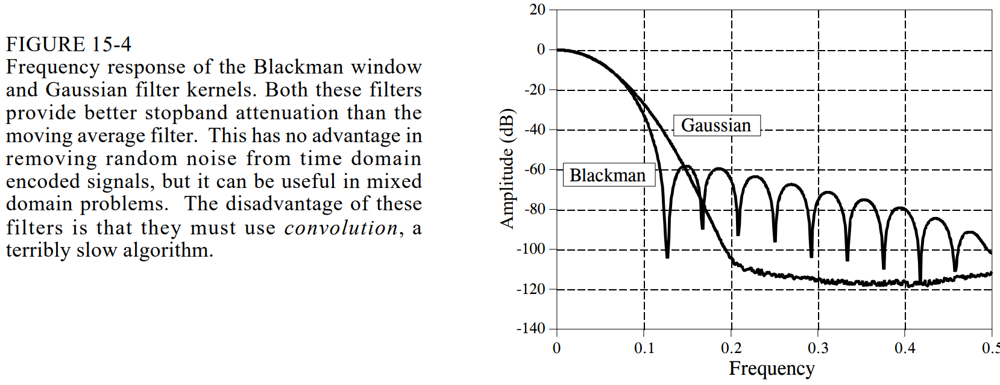
Recursive Implementation
An advantage of the moving average filter is that it can be implemented with an algorithm that is very fast. This equation uses two sources of data to calculate each point in the output. This is called recursive because the result of one calculation is used in future calculations (chapter 19 discusses recursive filters in more detail).
This algorithm is faster than other digital filters for several reasons. There are only two computations per point, regardless of the length of the filter kernel, and addition and subtractions are the only math operations needed.
Chapter 16: Windowed-Sinc Filters
Windowed-sinc filters are used to separate one band of frequencies from another. They are very stable, produce few surprises, and can be pushed to incredible performance levels. The exceptional frequency domain characteristics are obtained at the expense of poor performance in the time domain, including excessive ripple and overshoot in the step response. When carried out by standard convolution, windowed-sinc filters are easy to program, but slow to execute.
Strategy of the Windowed-Sinc
Figure 16-1 illustrates the idea behind the windowed-sinc filter. In (a), the frequency response of the ideal low-pass filter is shown. All frequencies below the cutoff frequency $f_c$ are passed with unity amplitude, while all higher frequencies are blocked. The passband is perfectly flat, the attenuation in the stopband is infinite, and the transition between the two is infinitesimally small.
Taking the inverse Fourier transform of this ideal frequency response produces the ideal filter kernel shown in (b). As previously discussed, this curve is of the general form of $sin(x)/x$.
$$h[i] = \frac{ sin(2 \pi f_c i) }{ i \pi }$$
Convolving an input signal with this filter kernel provides a perfect low-pass filter. The problem is, the sinc function continues to both negative and positive infinity without dropping to zero amplitude. To get around this, we will make two modifications. First, truncate to $M+1$ points, symmetrically chosen around the main lobe, where $M$ is an even number. All samples outside these $M+1$ points are set to $0$, or ignored. Second, the entire sequence is shifted to the right so that it runs from $0$ to $M$. This allows the filter kernel to be represented using only positive values.
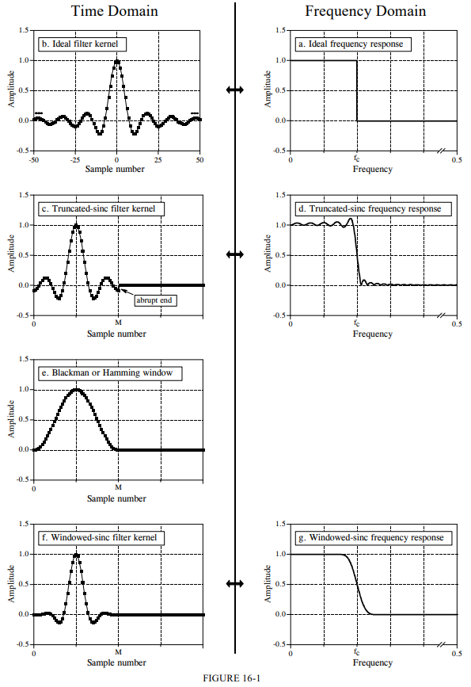
Since the modified filter kernel is only an approximation to the ideal filter kernel, it will not have an ideal frequency response. There is excessive ripple in the passband and poor attenuation in the stopband (the Gibbs effect). These problems result from the abrupt discontinuity at the ends of the truncated sinc function. Increasing the length of the filter does not reduce these problems.
A simple method of improving this situation is to multiply the truncated sinc by the Blackman window, resulting in the windowed-sinc filter kernel. Two different windows worth using are the Hamming window and Blackman window.
$$\text{Hamming: } w[i] = 0.54 - 0.46 ~cos(2 \pi i / M)$$
$$\text{Blackman: } w[i] = 0.42 - 0.5 ~cos(2 \pi i / M) + 0.08 ~cos(4 \pi i / M)$$
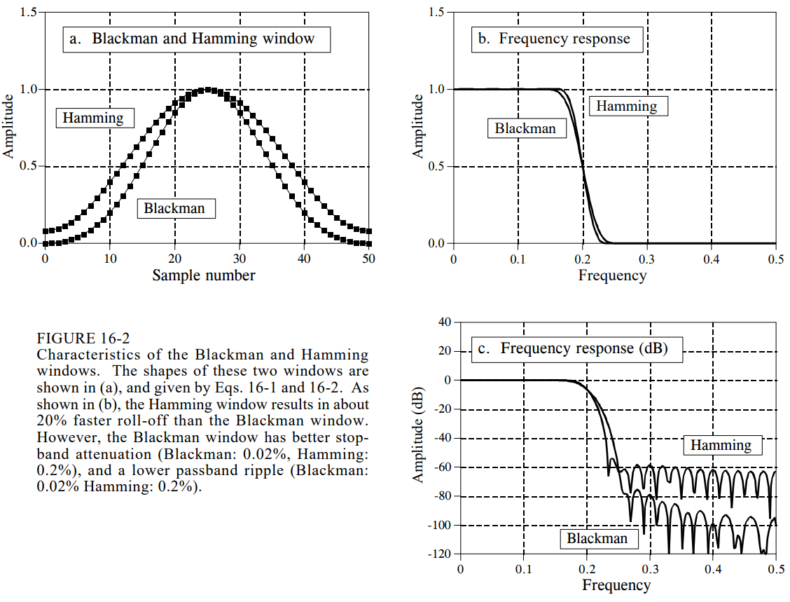
Designing the Filter
To design a windowed-sinc, two parameters must be selected: 1) the cutoff frequency $f_c$, and 2) the length of the filter kernel, $M$. The cutoff frequency is expressed as a fraction of the sampling rate, and therefore must be between $0$ and $0.5$. The value for $M$ sets the roll-off according to the approximation.
$$M \approx \frac{4}{BW}$$
- $BW$ is the width of the transition band
This expresses a trade-off between computation time (depends on the value of $M$) and filter sharpness (the value of $BW$).
After $f_c$ and $M$ have been selected, the filter kernel is calculated from the relation:
$$h[i] = K \frac{ sin(2 \pi f_c (i - \frac{M}{2})) }{ i = M/2 } \left[ 0.42 - 0.5 ~cos \left( \frac{2 \pi i}{M} \right) + 0.08 ~cos \left( \frac{4 \pi i}{M} \right) \right]$$
- The cutoff frequency $f_c$ is expressed as a fraction of the sampling rate, a value between $0$ and $0.5$
- The length of the filter kernel is determined by $M$, which must be an even integer
- The sample number $i$ is an integer that runs from $0$ to $M$, resulting in $M+1$ total points in the filter kernel
- The constant, $K$, is chosen to provide unity gain at zero frequency. To avoid a divide-by-zero error, for $i=M/2$, use $h[i] = 2 \pi f_c K$
- A high-pass or low-pass response
- The cutoff frequency
- The percent ripple in the passband
- The number of poles
Chapter 18: FFT Convolution
Two important DSP techniques are the overlap-add method and FFT convolution. FFT convolution uses the overlap-add method together with the FFT, allowing signals to be convolved by multiplying their frequency spectra.
The Overlap-Add Method
There are many DSP applications where a long signal must be filtered in segments. With high data rates, such as with video, it is common for computers to have insufficient memory to simultaneously hold the entire signal. There are also systems that process segment-by-segment because they operate in real time, such as telephone signals.
The overlap-add method decomposes the signal into simple components, processes each of the components in some useful way, and recombines the processed components into the final signal.
When an $N$ sample signal is filtered, the output signal is $N+M-1$ samples long.
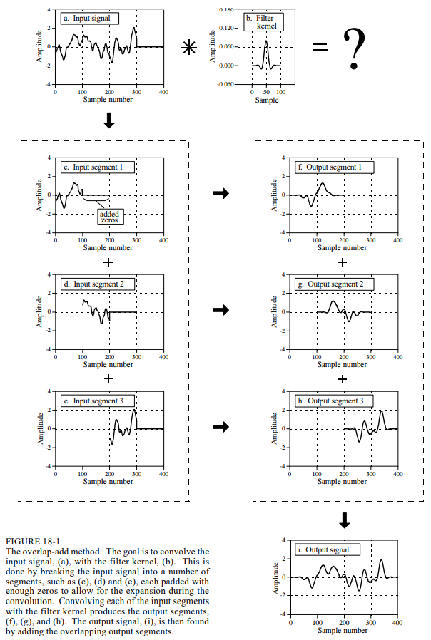
FFT Convolution
FFT convolution, also known as high-speed convolution, uses the principle that multiplication in the frequency domain corresponds to convolution in the time domain. The input signal is transformed into the frequency domain using the DFT, multiplied by the frequency response of the filter, and then transformed back into the time domain using the inverse DFT. The FFTs must be long enough that circular convolution does not take place.
Chapter 19: Recursive Filters
Recursive filters are an efficient way of achieving a long impulse response, without having to perform a long convolution. They execute very rapidly, but have less performance and flexibility than other digital filters. They are also called infinite impulse response (IIR) filters, since their impulse responses are composed of decaying exponentials. This distinguishes them from digital filters carried out by convolution, called finite impulse response (FIR) filters.
The most obvious source of information to calculate the output signal $y[n]$ is the input signal, i.e. that values $x[n], x[n-1], x[n-2], \ldots$ The algorithm is of the form:
$$y[n] = a_0x[n] + a_1x[n-1] + a_2x[n-2], \ldots$$
$$+ b_1y[n-1] + b_2y[n-2] + \ldots$$
In other words, each point in the output signal is found by multiplying the values from the input signal by the $a$ coefficients, multiplying the previously calculated values from the output signal by the $b$ coefficients, and adding the products together. There is not a value of $b_0$, because this corresponds to the sample being calculated. The $a$ and $b$ values that define the filter are called the recursion coefficients.
The relationship between the recursion coefficients and the filter's response is given by a mathematical technique called the z-transform (topic of chapter 33).
Narrow-Band Filters
A common need in electronics and DSP is to isolate a narrow band of frequencies from a wider bandwidth signal. Two types of frequency responses are available: the band-pass and band-reject (a.k.a notch) filter.
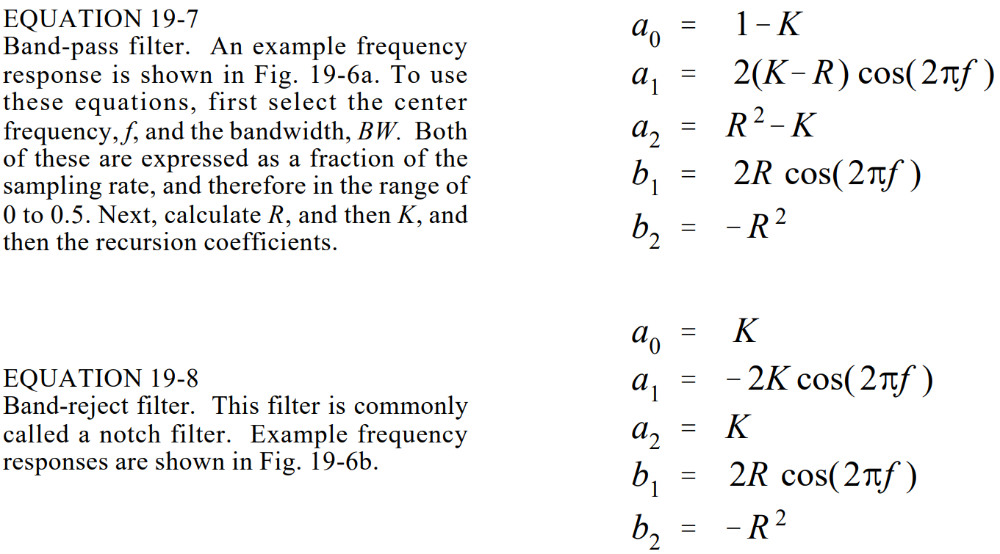
Phase Response
There are three types of phase response that a filter can have: zero phase, linear phase, and nonlinear phase. A zero phase filter is characterized by an impulse response that is symmetrical around $0$. When the Fourier transform is taken of this symmetrical waveform, the phase will be entirely zero.
The zero phase filter requires the use of negative indexes, which can be inconvenient to work with. The linear phase filter is a way around this. The impulse response in (d) below is identical to that shown in (a), except that it has been shifted to use only positive numbered samples. The impulse response is symmetrical, however the location of symmetry has been shifted from zero. The phase, shown in (e), is a straight line, hence the name linear phase. The linear phase filter is equivalent to the zero phase filter for most purposes.
It is easy to make an FIR filter have a linear phase, because the impulse response (filter kernel) is directly specified in the design process. Making the filter kernel have left-right symmetry is all that is required. This is not the case with IIR (recursive) filters, since the recursion coefficients are what is specified, not the impulse response. The impulse response of a recursive filter is not symmetrical between the left and right, and therefore has a nonlinear phase.
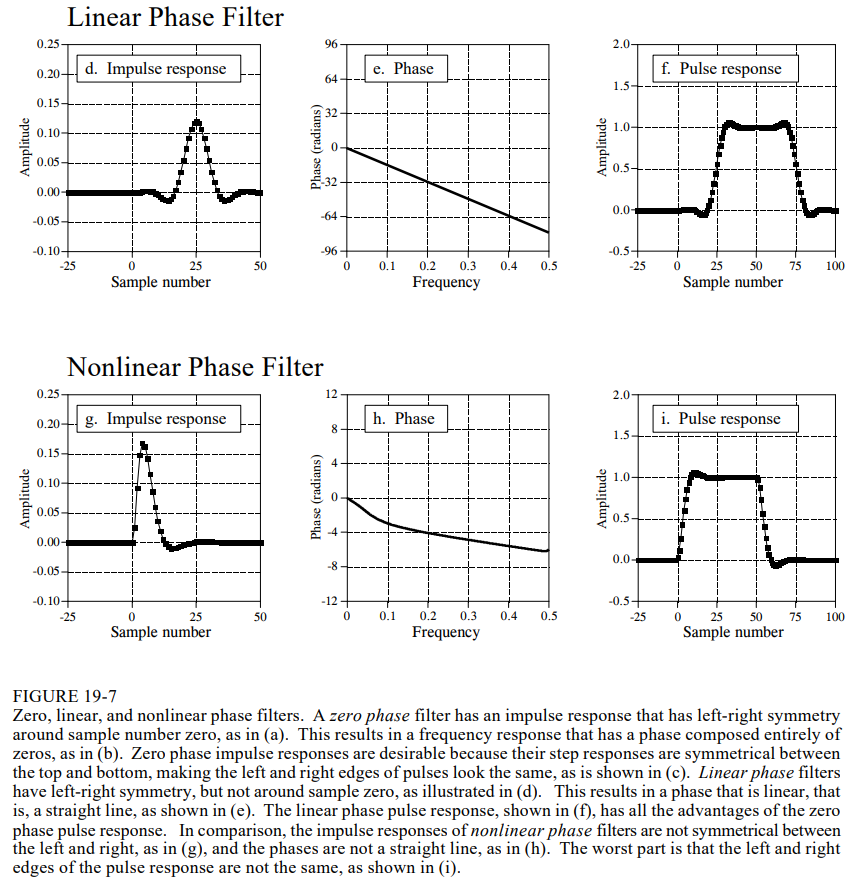
Chapter 20: Chebyshev Filters
Chebyshev filters are used to separate one band of frequencies from another. They cannot match the performance of the windowed-sinc filter, but are adequate for many applications. Their primary attribute is a speed much faster than the windowed-sinc filters, because they are carried out by recursion rather than convolution.
The Chebyshev and Butterworth Responses
The Chebyshev response is a mathematical strategy for achieving a faster roll-off by allowing ripple in the frequency response. Analog and digital filters that use this approach are called Chebyshev filters.
As the ripple increases, the roll-off becomes sharper. The Chebyshev response is an optimal trade-off between these two parameters. When the ripple is set to 0%, the filter is called a maximally flat or Butterworth filter. A ripple of 0.5% is often a good choice for digital filters.
The Chebyshev filters discussed in this chapter are called type 1 filters, and allow ripple in the stopband, but are seldom used. Elliptic filters have ripple in both the passband and stopband, and provide the fastest roll-off for a given number of poles, but are harder to design.
Designing the Filter
You must select four parameters to design a Chebyshev filter:
What is a Pole?
The Laplace transform and z-transform are mathematical ways of breaking an impulse response into sinusoids and decaying exponentials. This is done by expressing the system's characteristics as one complex polynomial divided by another complex polynomial. The roots of the numerator are called zeros, while the roots of the denominator are called poles. Since poles and zeros can be complex numbers, it is common to say they have a location in the complex plane. Elaborate systems have more poles and zeros than simple ones. Recursive filters are designed by first selecting the location of poles and zeros, then finding the appropriate recursion coefficients.
Step Response Overshoot
Butterworth and Chebyshev filters have an overshoot of $5\%$ to $30\%$ in their step response, becoming larger as the number of poles is increased. The excessive overshoot and ringing in the step response results from the Chebyshev filter being optimized for the frequency domain at the expense of the time domain.
Chapter 21: Filter Comparison
Analog vs. Digital Filters
One advantage of analog filters is speed. The second is dynamic range. Amplitude dynamic range is the ratio between the largest signal that can be passed through a system and the inherent noise of the system.
Windowed-Sinc vs. Chebyshev
Both the windowed-sinc and Chebyshev filters are designed to separate one band of frequencies from another. The windowed-since is a FIR filter implemented by convolution, while the Chebyshev is an IIR filter carried out by recursion.
Either will work when moderate performance is needed. The two critical issues are maximum performance and speed. The windowed-sinc has greater maximum performance, while the Chebyshev is quick. Even if the recursive filter were improved (more poles, multistage implementation, double precision, etc.), it is still no match for the FIR performance. However, FIR filters can be expected to be about an order of magnitude slower than comparable IIR filters.
Moving Average vs. Single Pole
These are both time-domain filters. They are quite equally matched in terms of performance and often the choice is based on personal preference. However, there are two cases where one filter has a slight edge over the other, based on the trade-off between development time and execution time. If you want to reduce development time and are willing to accept a slower filter, such as if you have a one-time need to filter a few thousand points, the single pole recursive filter has the advantage of being easier to program and modify. However, if your filter must operate as fast as possible and you are willing to spend the extra development time, the choice should be a moving average filter.
Chapter 22: Audio Processing
Human Hearing
The middle ear is a set of small bones that transfer vibration to the cochlea (inner ear) where it is converted to neural impulses. The cochlea is a liquid filled tube. When a sound wave tries to pass from air into liquid, only a small fraction of the sound is transmitted through the interface, while the remainder of the energy is reflected.
Air has a low mechanical impedence - low acoustic pressure and high particle velocity - resulting from low density and high compressibility, while liquid has a high mechanical impedence. The middle ear is an impedence matching network that increases the fraction of sound energy entering the liquid of the inner ear. Most of the impedence conversion results from the difference in area between the ear drum (receiving sound from the air) and the oval window (transmitting sound into liquid). The ear drum has an area of about $60 mm^2$, while the oval sindow has an area of about $4 mm^2$, and since pressure is equal to force $\times$ area, the difference in area increases the sound wave pressure by about $15$ times.
Within the cochlea is the basilar membrane, a structure for about $12,000$ sensory cells forming the cochlear nerve. It is stiffest near the oval window, and more flexible toward the opposite end, allowing it to act as a frequency spectrum analyzer. Exposed to a high frequency signal, the basilar membrane resonates where it is stiff, resulting in excitation of nerve cells close to the oval window. Likewise, low frequency sounds excite nerve cells at the far end of the basilar membrane.
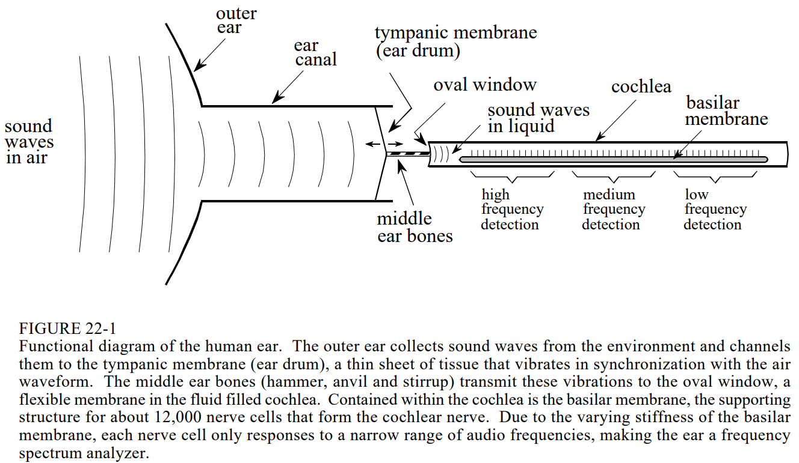
Table 22-1 shows the relationship between sound intensity and perceived loudness. It is common to express sound intensity on a logarithmic scale, called decibel SPL (sound power level). $0 dB$ SPL is a sound wave power of $10^{-16} watts/cm^2$, about the weakest sound detctable by the human ear. Normal speech is about $60 dB$, while painful damage to the ear occurs at about $140 dB$. The range of human hearing is generally considered to be $20 Hz$ to $20 kHz$, but it is far more sensitive to sounds between $1 kHz$ and $4 kHz$.
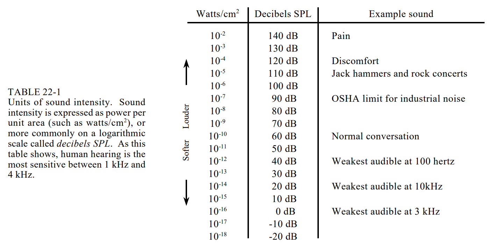
Human hearing can determine the direction a sound is from, but does poorly at identifying the distance to the sound source. There are few clues available in a sound wave that can provide this information. Human hearing weakly perceives that high frequency sounds are nearby, while low frequency sounds are distant, because sound waves dissipate their higher frequencies as they propagate long distances. Echo content is another weak clue to distance, providing a perception of the room size.
Timbre
The perception of a continuous sound is divided into three parts: 1) loudness, 2) pitch, and 3) timbre. Loudness is a measure of wave intensity, pitch is the frequency of the fundamental component in the sound, and timbre is more complicated, being determined by the harmonic content of the signal.
The ear largely disregards phase variations, but it cannot be said that the ear is completely deaf to phase. This is because a phase change can rearrange the time sequence of an audio signal. Although they differ only in phase, the ear can distinguish between the two sounds because of their difference in duration.
Since two instruments produce the same fundamental frequency for a note, they sound similar and are said to havce identical pitch. Since the relative amplitude of the harmonics is different, they will not sound identical, and will be said to have different timbre.
It is often said that timbre is determined by the shape of the waveform, but this is slightly misleading. The perception of timbre results from the ear detecting harmonics, and while harmonic content is determined by the shape of the waveform, the insensitivity of the ear to phase is a one-sided relationship. A particular waveform will have only one timbre, while a particular timbre has an infinite number of possible waveforms.
Sound Quality vs. Data Rate
When designing a digital audio system, there are two questions that need to be asked: 1) how good does it need to sound, and 2) what data rate can be tolerated? The answer usually results in one of three categories. First, high fidelity music, where sound quality is of greatest performance. Second, telephone communication, requiring a low data rate to reduce cost; and third, compressed speech, where reducing the data rate is very important and a reduction in sound quality can be tolerated.
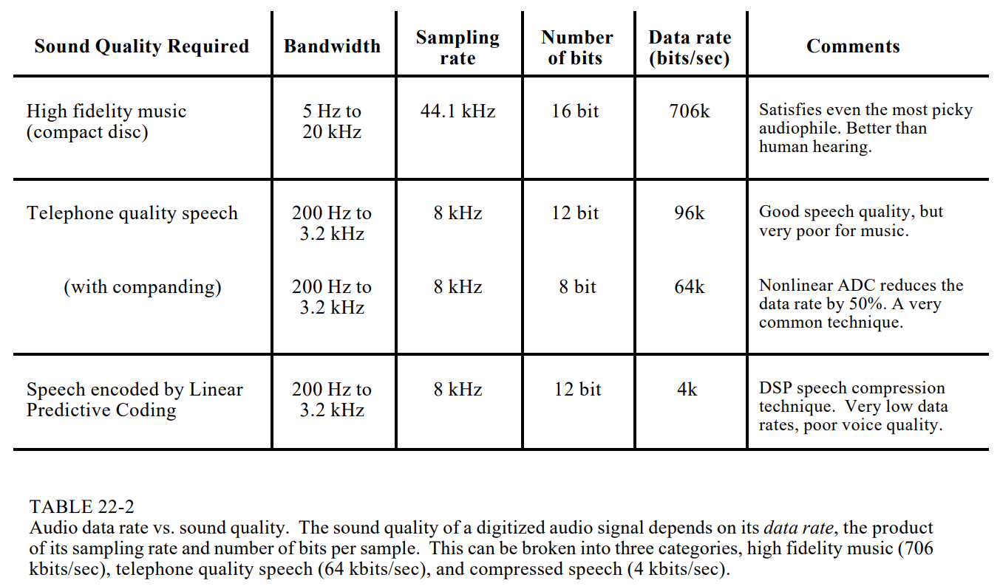
Chapter 23: Image Formation and Display
Images are a description of how a parameter varies over a surface. Standard visual images result from light intensity variations across a 2D plane; however, light is not the only parameter used in scientific imaging. An image can be formed of the temperature of an integrated circuit, blood velocity in a patient's artery, x-ray emissions, or ground motion, etc.
Digital Image Structure
Images have their information encoded in the spatial domain, the image equivalent of the time domain. Features in images are represented by edges, not sinusoids. The spacing and number of pixels are determined by how small of features need to be seen, rather than by the formal constraints of the sampling theorem. Aliasing can occur in images - for instance, pinstriped suits look bad on television because the repetititive pattern is greater than the Nyquist frequency - but it is generally thought of as a nuisance rather than a major problem.
The region of a continuous image that contributes to a pixel value is called the sampling aperture. The size of the sampling aperture is often related to the inherent capabilities of the particular imaging system being used. In most cases, the sampling grid is made approximately the same as the sampling aperture of the system. Resolution in the final digital image will be limited primarily by the larger of the two.
Cameras and Eyes
The structure and operation of the eye is very similar to an electronic camera; both are based on major components of a lens assembly and an imaging sensor. The lens assembly captures a portion of the light emanating from an object, and focus it onto the imaging sensor, which transforms the pattern of light into a video signal. Each system has two adjustable parameters: focus and iris diameter.
If the lens is not properly focused, each point on the object will project to a circular region on the imaging sensor, causing the image to be blurry. Focusing is achieved by physically moving the lens toward or away from the imaging sensor. The iris is used to control how much of the lens is exposed to light, and therefore the brightness of the image projected onto the imaging sensor.
Consider how the amount of available light and the sensitivity of the light sensor affects the sharpness of the acquired image. This is because the iris diameter and the exposure time are adjusted to transfer the proper amount of light from the scene being viewed to the image sensor. If more than enough light is available, the diameter of the iris can be reduced, resulting in a greater depth of field, the range of distance from the camera where an object remains in focus. A greater depth of field provides a sharper image when objects are at various distances. In addition, an abundance of light allows the exposure time to be reduced, resulting in less blur from camera shaking and object motion.
Brightness and Contrast Adjustments
An image must have the proper brightness and contrast for easy viewing. Brightness refers to the overall lightness or darkness of an image, and contrast is the difference in brightness between objects or regions. When brightness is too high, the whitest pixels are saturated, and when too low, the blackest pixels are saturated.
Grayscale Transforms
A powerful technique for improving the appearance of images is the grayscale transform. The idea is to increase the contrast of pixel values of interest, at the expense of pixel values we don't care about. This is done by defining the relative importance of each of the $0$ to $255$ possible pixel values.
Grayscale transforms can significantly improve the viewability of an image, but require a great deal of trial and error.
Chapter 24: Linear Image Processing
Linear image processing is based on the same two techniques as conventional DSP: convolution and Fourier analysis. Convolution is the more important of the two, since images have their information encoded in the spatial domain rather than the frequency domain. Linear filtering can improve images by sharpening the edges of objects, reducing random noise, correcting for unequal illumination, and applying deconvolution to correct for blur and motion, etc. These procedures are carried out by convolving the original image with an appropriate filter kernel, producing the filtered image. A problem with image convolution is the enormous number of calculations that need to be performed, often resulting in long execution times. Two important techniques for reducing the execution time are convolution by separability and FFT convolution.
Convolution
Image convolution works in the same way as 1D convolution. Images can be viewed as a summation of impulses, i.e., scaled and shifted delta functions. Likewise, linear systems are characterized by how they respond to impulses; i.e., by their impulse responses. The output image from a system is equal to the input image convolved with the system's impulse response.
The 2D delta function is an image composed of all zeros, except for a single pixel at row $0$ and column $0$, which has a value of $1$ (assume the row and column indexes have both positive and negative values, such that the $1$ is centered among zeros). When the delta function is passed through a linear system, the single nonzero point will be changed into some 2D pattern. Since the only thing that can happen to a point is that it spreads out, the impulse response is often called the point spread function (PSF).
As with 1D signals, image convolution can be viewed in two ways: from the input, and from the output. From the input side, each pixel in the input image contributes a scaled and shifted version of the point spread function to the output image. From the output side, each pixel in the output image is influenced by a group of pixels from the input signal. For 1D signals, this region of influence is the impulse response flipped left-for-right. For image signals, it is the PSF flipped left-for-right and top-for-bottom. These flips generally do nothing, as most of the PSFs used in DSP are symmetrical around the vertical and horizontal axes.
Figure 24-3 shows several common PSFs. The pillbox, shown in (a) with a circular top and straight sides, is the PSF of an out-of-focus lens. The Gaussian, shown in (b), is the PSF of imaging systems limited by random perfections. The pillbox and Gaussian are used in image processing analogously to the moving average filter with 1D signals. Images convolved with these PSFs will appear blurry and have less defined edges, but will be lower in random noise. These are called smoothing filters, for their action in the time domain, or low-pass filters, for how they treat the frequency domain.
The opposite of a smoothing filter is an edge enhancement or high-pass filter. The spectral inversion technique (discussed in chapter 14) is used to change between the two. An edge enhancement filter kernel is formed by taking the negative of a smoothing filter, and adding a delta function in the center.
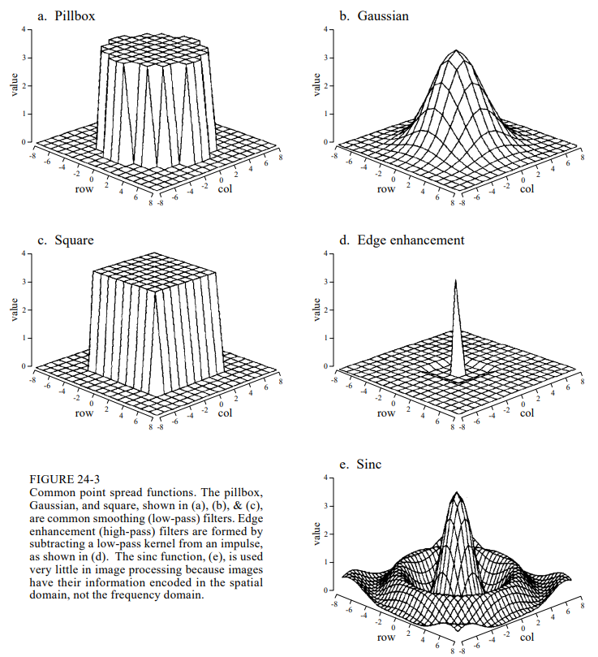
A problem with image convolution is that a large number of calculations are needed. When a $512 \times 512$ pixel image is convolved with a $64 \times 64$ pixel PSF, more than a billion multiplications and additions are needed ($64 \times 64 \times 512 \times 512$). Three approaches are used to speed things up.
The first strategy is to use a very small PSF, often only $3 \times 3$ pixels, as that is large enough to affect the edges in an image. The second strategy is used when a PSF is needed, but its shape isn't critical. This calls for a filter kernel that is separable, a property that allows the image convolution to be carried out as a series of 1D operations, improving execution speed by hundreds of times. The third strategy is FFT convolution, used when the filter kernel is large and has a specific shape.
$3 \times 3$ Edge Modification
Figure 24-4 shows several $3 \times 3$ operations. (a) is an image convoled with a $3 \times 3$ delta function, leaving the image unchanged. (b) shows a shift and subtract operation, because a shifted version of the image (corresponding to the $-1$) is subtracted from the original image (corresponding to the $1$). This produces the optical illusion that some objects are closer or farther away than the background, making a 3D or embossed effect. (c) shows an edge detection PSF, in which every edge in the original image is transformed into narrow dark and light bands that run parallel to the original edge.
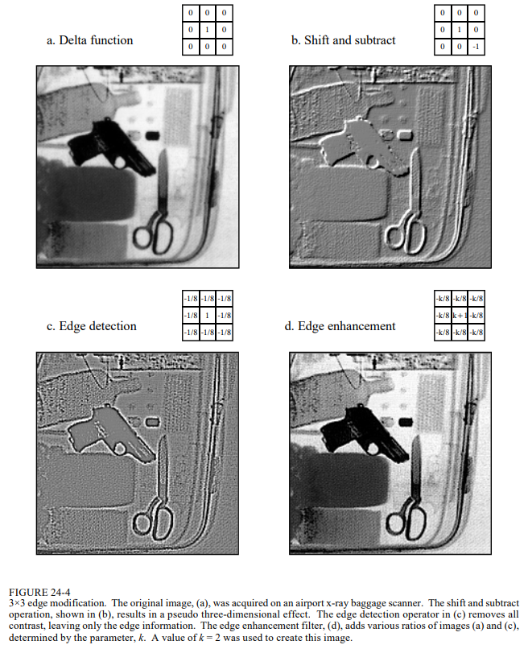
Convolution by Separability
This is a technique for fast convolution, as long as the PSF is separable, meaning it can be broken into two 1D signals: a vertical projection and horizontal projection.
$$x[r,c] = vert[r] \times horz[c]$$
where $x[r,c]$ is the 2D image, and $vert[r]$ and $horz[c]$ are the 1D projections. Most images do not satisfy this requirement.
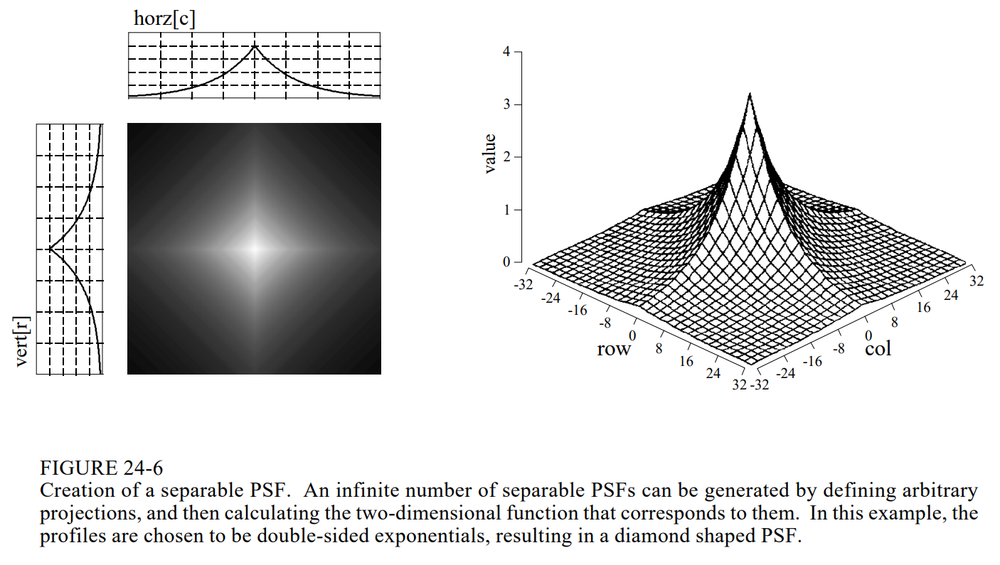
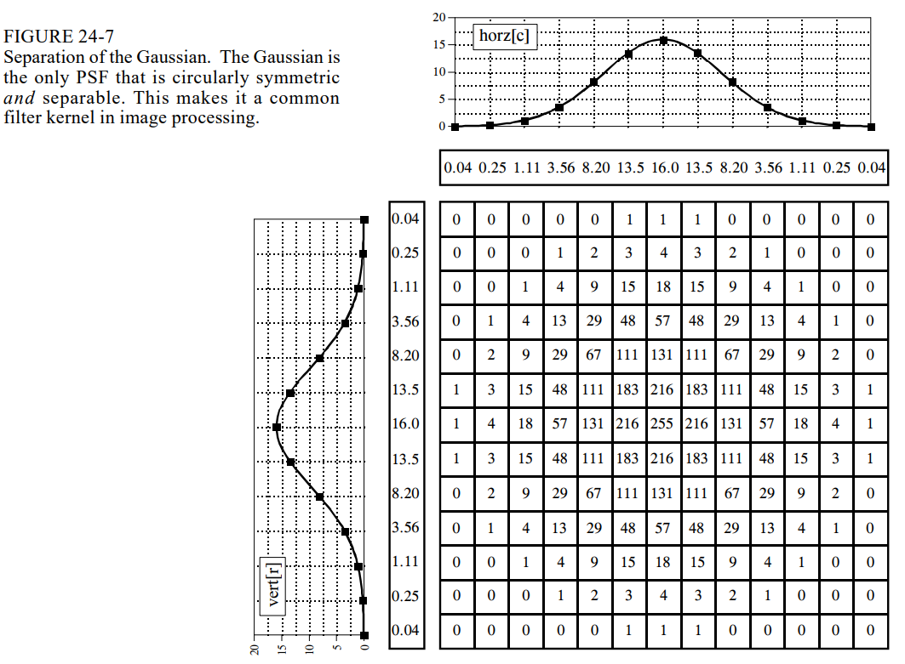
To convolve an image with a separable filter kernel, convolve each row in the image with the horizontal projection, resulting in an intermediate image, and then convolve each column of the intermediate image with the vertical projection of the PSF. Or, convolve the columns first and then rows.
Example of a Large PSF: Illumination Flattening
A common application requiring a large PSF is the enhancement of images with unequal illumination. Convolution by separability is an ideal algorithm to carry out this processing. Images seen by the eye are generally formed by reflected light, which means that a viewed image is equal to the reflectance of objects multiplied by ambient illumination.
The goal of the image processing is to flatten the illumination component of the acquired image. We want the final image to be representative of the objects' reflectance, not the lighting conditions. Linear filtering performs poorly in this application because the reflectance and illumination signals were originally combined by multiplication, not addition. To separate these signals, they must be unmultiplied. The original image should be divided by the smoothed image, correcting the brightness and restoring contrast to the proper level.
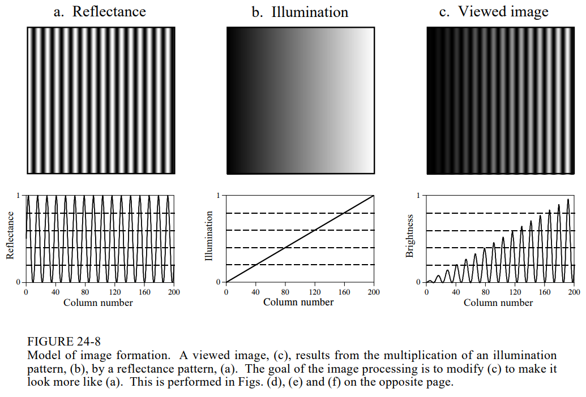
The procedure of dividing the images is closely related to homomorphic processing, a way of handling signals combined through a nonlinear operation. The strategy is to change the nonlinear problem into a linear one through an appropriate mathematical operation. When two signals are combined by multplication, homomorphic processing starts by taking the logarithm of the acquired signal. With the identity: $log(a \times b) = log(a) + log(b)$, the problem of separating multiplied signals is converted to a problem of separating added signals. For example, after taking the logarithm of the image in (c), a linear high-pass filter is used to subtract a smoothed version of the image, and then the antilogarithm (exponent) is used to undo the logarithm, resulting in the desired approximation to the reflectance image.
Fourier Image Analysis
Fourier image analysis is used in image processing in much the same way as with 1D signals. However, images do not have their information encoded in the frequency domain, making the techniques less useful. In spite of this, Fourier image analysis does have several useful properties. For instance, convolution in the spatial domain corresponds to multiplication in the frequency domain. This is important because multiplication is a simpler mathematical operation than convolution. As with 1D signals, this property enables FFT convolution and various deconvolution techniques.
To calculate the Fourier transform of an image: take the 1D FFT of each of the rows, followed by the 1D FFT of each of the columns. You start by taking the FFT of the $N$ pixel values in row $0$ of the real array. The real part of the FFT's output is placed back into row $0$ or the real array, while the imaginary part of the FFT's output is placed into row $0$ of the imaginary array. After repeating this procedure on rows $1$ through $N-1$, both the real and imaginary arrays contain an intermediate image. Next, the procedure is repeated on each of the columns of the intermediate data. Take the $N$ pixel values from column $0$ of the real array, and the $N$ pixel values from column $0$ of the imaginary array, and calculate the FFT. The real part of the FFT's output is placed back into column $0$ of the real array, while the imaginary part of the FFT's output is placed back into column $0$ of the imaginary array. After this is repeated on columns $1$ through $N-1$, both arrays have been overwritten with the frequency spectrum.
Here is a link to Part 3